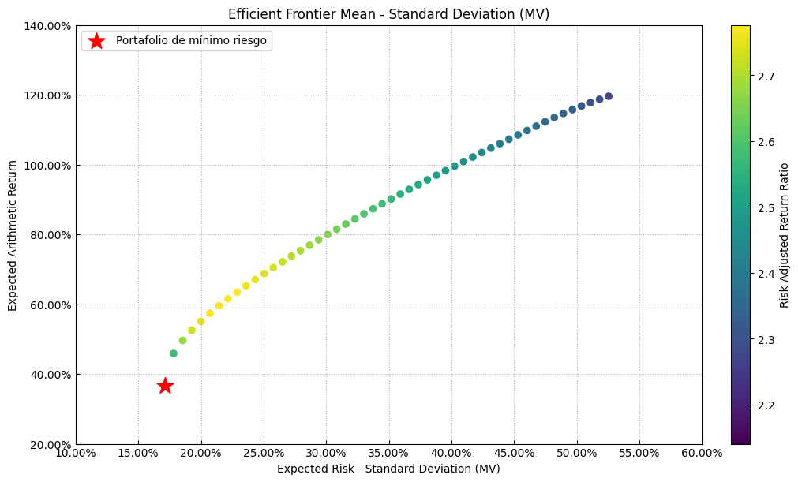
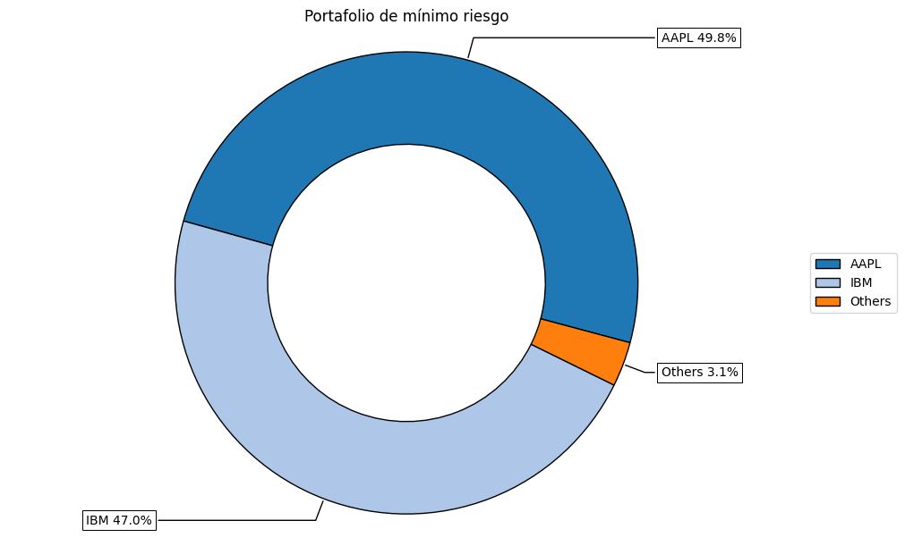
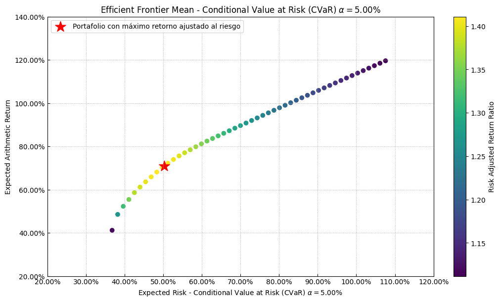
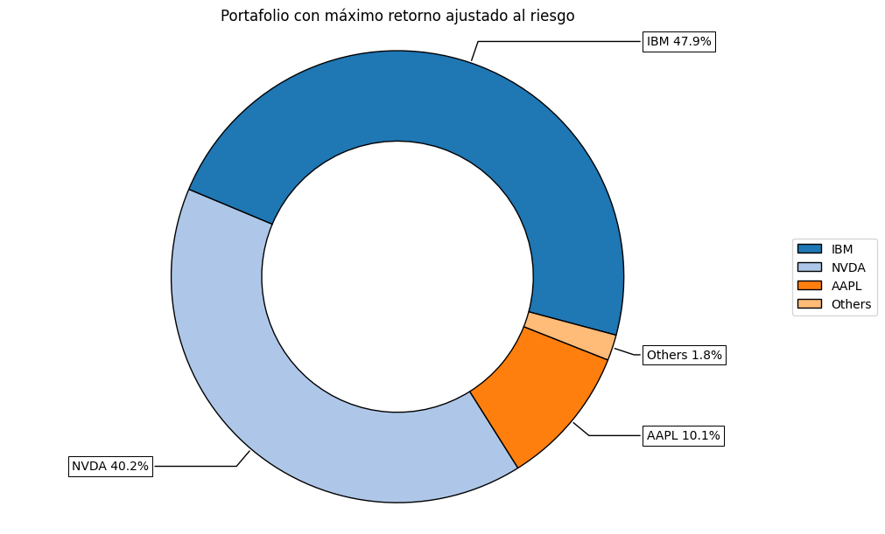
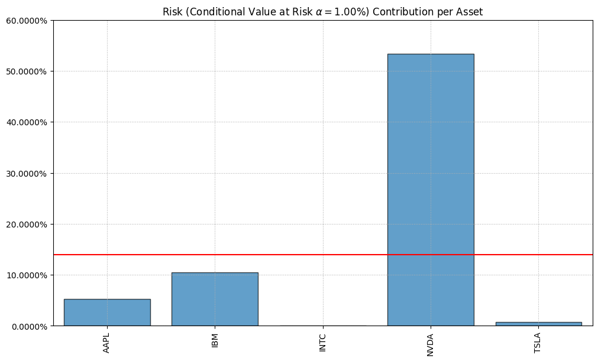
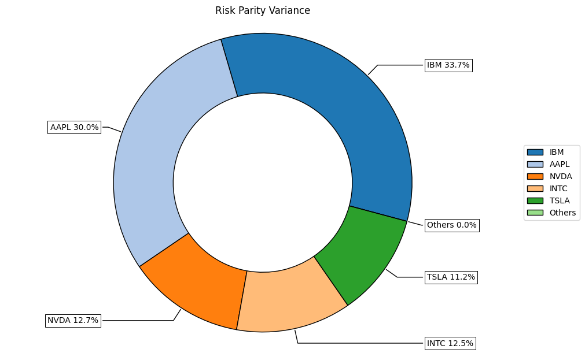
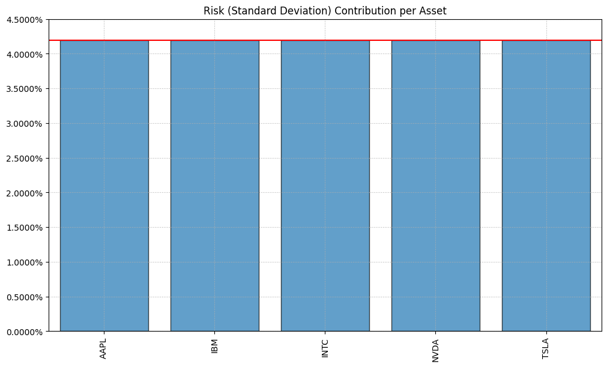
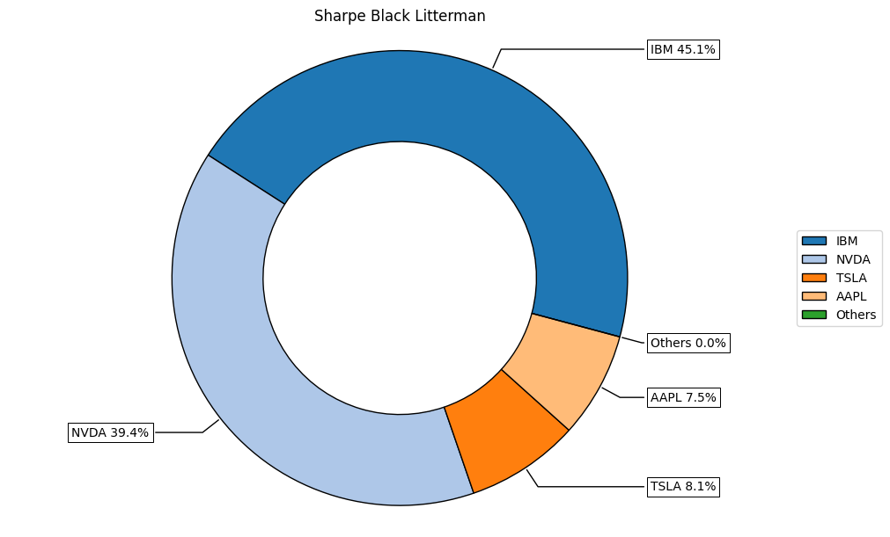
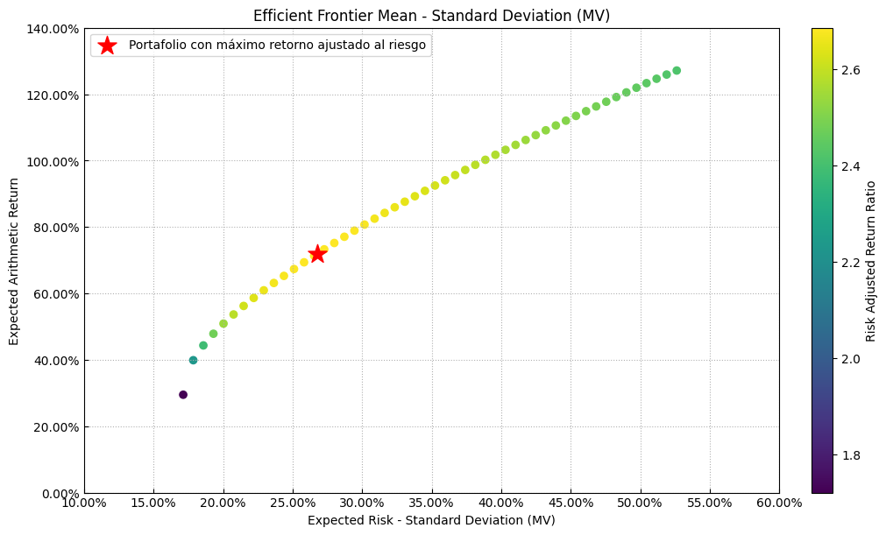

6. Optimizando portafolios#
Optimizando portfolios con Riskfolio-Lib#
Una librería bastante popular para realizar optimizaciones de portfolio es Riskfolio-lib. Además de realizar una típica optimización por media-varianza, también permite utilizar otras métricas de riesgo, como CVar.
!pip install pybind11 cvxpy riskfolio-lib --quiet
import yfinance as yf
import numpy as np
import pandas as pd
activos = ["TSLA", "IBM", "AAPL", "NVDA", "INTC"]
n = len(activos)
precios = yf.download(activos, start = "2024-01-01", end = "2024-12-31", auto_adjust=True, multi_level_index=False)
retornos = precios["Close"].pct_change().dropna()
retornos.head()
[*********************100%***********************] 5 of 5 completed
| Ticker | AAPL | IBM | INTC | NVDA | TSLA |
|---|---|---|---|---|---|
| Date | |||||
| 2024-01-03 | -0.007488 | -0.008669 | -0.015690 | -0.012436 | -0.040134 |
| 2024-01-04 | -0.012700 | 0.004747 | -0.003826 | 0.009019 | -0.002181 |
| 2024-01-05 | -0.004013 | -0.010568 | 0.000427 | 0.022897 | -0.001849 |
| 2024-01-08 | 0.024175 | 0.012440 | 0.033269 | 0.064281 | 0.012464 |
| 2024-01-09 | -0.002263 | -0.006578 | -0.008256 | 0.016975 | -0.022832 |
Mínimo riesgo#
Se usa como función objetivo la minimización del riesgo medido como varianza.
import riskfolio as rp
# Construyendo el objeto portafolio
port = rp.Portfolio(returns=retornos)
# Calculando el portafolio óptimo
# Seleccionar método y estimar parámetros de entrada:
method_mu='hist' # Método para estimar los retornos esperados basado en datos históricos.
method_cov='hist' # Método para estimar la matriz de covarianza basado en datos históricos.
port.assets_stats(method_mu=method_mu, method_cov=method_cov)
# Estimar portafolio óptimo:
model='Classic' # Puede ser Classic (histórico), BL (Black Litterman) o FM (Factor Model)
rm = 'MV' # Medida de riesgo utilizada, esta vez será la varianza
obj = 'MinRisk' # Función objetivo, puede ser MinRisk, MaxRet, Utility o Sharpe
hist = True # Usar escenarios históricos para medidas de riesgo que dependen de escenarios
rf = 0 # Tasa libre de riesgo
l = 0 # Factor de aversión al riesgo, solo útil cuando obj es 'Utility'
w = port.optimization(model=model, rm=rm, obj=obj, rf=rf, l=l, hist=hist)
display(w.T)
| AAPL | IBM | INTC | NVDA | TSLA | |
|---|---|---|---|---|---|
| weights | 0.498485 | 0.470274 | 0.004857 | 0.010011 | 0.016372 |
points = 50 # Número de puntos de la frontera
frontier = port.efficient_frontier(model=model, rm=rm, points=points, rf=rf, hist=hist)
display(frontier.T.head())
| AAPL | IBM | INTC | NVDA | TSLA | |
|---|---|---|---|---|---|
| 0 | 0.498485 | 0.470274 | 4.856650e-03 | 0.010011 | 0.016372 |
| 1 | 0.409604 | 0.449823 | 1.732864e-09 | 0.104563 | 0.036010 |
| 2 | 0.371054 | 0.440124 | 6.011482e-09 | 0.144731 | 0.044091 |
| 3 | 0.340693 | 0.432433 | 8.880148e-09 | 0.176508 | 0.050366 |
| 4 | 0.314301 | 0.425798 | 6.209867e-09 | 0.204004 | 0.055897 |
# Graficando la frontera eficiente
label = 'Portafolio de mínimo riesgo' # Título del punto
mu = port.mu # Retornos esperados
cov = port.cov # Matriz de covarianza
returns = port.returns # Retornos de los activos
ax = rp.plot_frontier(w_frontier=frontier, mu=mu, cov=cov, returns=returns, rm=rm,
rf=rf, alpha=0.05, cmap='viridis', w=w, label=label,
marker='*', s=16, c='r', height=6, width=10, ax=None)

ax = rp.plot_pie(w=w, title='Portafolio de mínimo riesgo', others=0.05, nrow=25, cmap = "tab20",
height=6, width=10, ax=None)

CVar#
Se cambia la medida de riesgo a Conditional Value at Risk (CVaR).
rm = 'CVaR' # Medida de riesgo
w = port.optimization(model=model, rm=rm, obj=obj, rf=rf, l=l, hist=hist)
display(w.T)
| AAPL | IBM | INTC | NVDA | TSLA | |
|---|---|---|---|---|---|
| weights | 0.100628 | 0.478503 | 2.745833e-11 | 0.40248 | 0.018388 |
points = 50 # Número de puntos de la frontera
frontier = port.efficient_frontier(model=model, rm=rm, points=points, rf=rf, hist=hist)
display(frontier.T.head())
| AAPL | IBM | INTC | NVDA | TSLA | |
|---|---|---|---|---|---|
| 0 | 0.409696 | 0.490586 | 2.146939e-11 | 0.034936 | 0.064782 |
| 1 | 0.373086 | 0.452795 | 5.089398e-12 | 0.132678 | 0.041441 |
| 2 | 0.384791 | 0.405722 | 1.083809e-11 | 0.186805 | 0.022682 |
| 3 | 0.312782 | 0.438461 | 3.537803e-13 | 0.219171 | 0.029586 |
| 4 | 0.240773 | 0.471200 | 3.718974e-12 | 0.251537 | 0.036489 |
label = 'Portafolio con máximo retorno ajustado al riesgo' # Título del punto
ax = rp.plot_frontier(w_frontier=frontier, mu=mu, cov=cov, returns=returns, rm=rm,
rf=rf, alpha=0.05, cmap='viridis', w=w, label=label,
marker='*', s=16, c='r', height=6, width=10, ax=None)

ax = rp.plot_pie(w=w, title='Portafolio con máximo retorno ajustado al riesgo', others=0.05, nrow=25, cmap = "tab20",
height=6, width=10, ax=None)

Risk Parity#
# Plotting the risk composition of the portfolio
ax = rp.plot_risk_con(w, cov=port.cov, returns=port.returns, rm=rm, rf=0, alpha=0.01,
color="tab:blue", height=6, width=10, ax=None)

b = None # Risk contribution constraints vector
rm = 'MV' # Medida de riesgo utilizada, esta vez será la varianza
w_rp = port.rp_optimization(model=model, rm=rm, rf=rf, b=b, hist=hist)
display(w_rp.T)
| AAPL | IBM | INTC | NVDA | TSLA | |
|---|---|---|---|---|---|
| weights | 0.299789 | 0.336993 | 0.124699 | 0.126728 | 0.111791 |
ax = rp.plot_pie(w=w_rp, title='Risk Parity Variance', others=0.05, nrow=25, cmap = "tab20",
height=6, width=10, ax=None)

ax = rp.plot_risk_con(w_rp, cov=port.cov, returns=port.returns, rm=rm, rf=0, alpha=0.01,
color="tab:blue", height=6, width=10, ax=None)

Black–Litterman (BL)#
asset_classes = {'Assets': ["TSLA", "IBM", "AAPL", "NVDA", "INTC"],
'Industry': ['Automovil','Tecnologia','Tecnologia',
'Procesadores', 'Procesadores']}
asset_classes = pd.DataFrame(asset_classes)
asset_classes = asset_classes.sort_values(by=['Assets'])
views = {'Disabled': [False, False],
'Type': ['Classes', 'Classes'],
'Set': ['Industry', 'Industry'],
'Position': ['Automovil', 'Procesadores'],
'Sign': ['>=', '>='],
'Weight': [0.6, 0.6], # Annual terms
'Type Relative': ['Classes', 'Classes'],
'Relative Set': ['Industry', 'Industry'],
'Relative': ['Tecnologia', 'Tecnologia']}
views = pd.DataFrame(views)
display(views)
display(asset_classes)
| Disabled | Type | Set | Position | Sign | Weight | Type Relative | Relative Set | Relative | |
|---|---|---|---|---|---|---|---|---|---|
| 0 | False | Classes | Industry | Automovil | >= | 0.6 | Classes | Industry | Tecnologia |
| 1 | False | Classes | Industry | Procesadores | >= | 0.6 | Classes | Industry | Tecnologia |
| Assets | Industry | |
|---|---|---|
| 2 | AAPL | Tecnologia |
| 1 | IBM | Tecnologia |
| 4 | INTC | Procesadores |
| 3 | NVDA | Procesadores |
| 0 | TSLA | Automovil |
P, Q = rp.assets_views(views, asset_classes)
display(pd.DataFrame(P.T))
display(pd.DataFrame(Q))
| 0 | 1 | |
|---|---|---|
| 0 | -0.5 | -0.5 |
| 1 | -0.5 | -0.5 |
| 2 | 0.0 | 0.5 |
| 3 | 0.0 | 0.5 |
| 4 | 1.0 | 0.0 |
| 0 | |
|---|---|
| 0 | 0.6 |
| 1 | 0.6 |
# Estimar las entradas de Black Litterman:
port.blacklitterman_stats(P, Q/252, rf=rf, w=w, delta=None, eq=True)
# Estimar portafolio óptimo:
model='BL'# Black Litterman
rm = 'MV' # Medida de riesgo utilizada, esta vez será la varianza
obj = 'Sharpe' # Función objetivo, puede ser MinRisk, MaxRet, Utility o Sharpe
hist = False # Usar escenarios históricos para medidas de riesgo que dependen de escenarios
w_bl = port.optimization(model=model, rm=rm, obj=obj, rf=rf, l=l, hist=hist)
display(w_bl.T)
| AAPL | IBM | INTC | NVDA | TSLA | |
|---|---|---|---|---|---|
| weights | 0.075013 | 0.45076 | 3.831484e-10 | 0.393558 | 0.08067 |
ax = rp.plot_pie(w=w_bl, title='Sharpe Black Litterman', others=0.05, nrow=25,
cmap = "tab20", height=6, width=10, ax=None)

points = 50 # Número de puntos de la frontera
frontier = port.efficient_frontier(model=model, rm=rm, points=points, rf=rf, hist=hist)
# Graficando la frontera eficiente
label = 'Portafolio con máximo retorno ajustado al riesgo' # Título del punto
mu = port.mu_bl # Retornos esperados del modelo Black Litterman
cov = port.cov_bl # Matriz de covarianza del modelo Black Litterman
returns = port.returns # Retornos de los activos
ax = rp.plot_frontier(w_frontier=frontier, mu=mu, cov=cov, returns=returns, rm=rm,
rf=rf, alpha=0.05, cmap='viridis', w=w_bl, label=label,
marker='*', s=16, c='r', height=6, width=10, ax=None)
